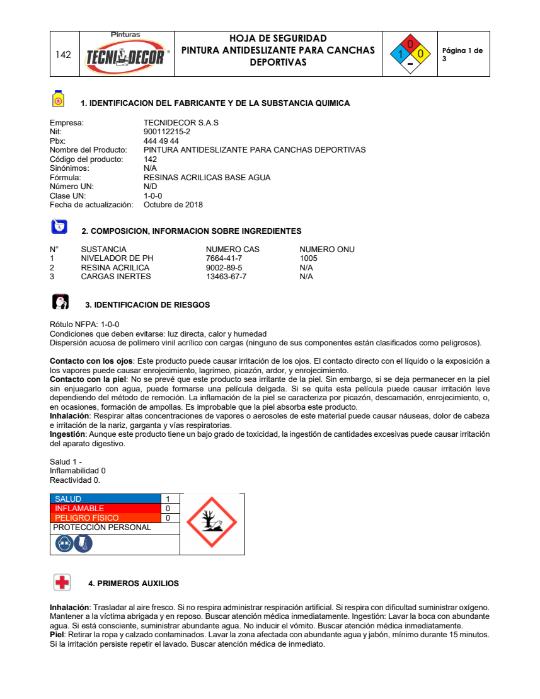
| N° | SUSTANCIA | NUMERO CAS | NUMERO ONU |
|---|---|---|---|
| 1 | NIVELADOR DE PH | 7664-41-7 | 1005 |
| 2 | RESINA ACRILICA | 9002-89-5 | N/A |
| 3 | CARGAS INERTES | 13463-67-7 | N/A |
Esta ficha no tiene tablas en el Markdown. Revisa manualmente un bloque con datos (p. ej. sección 3 o 9).
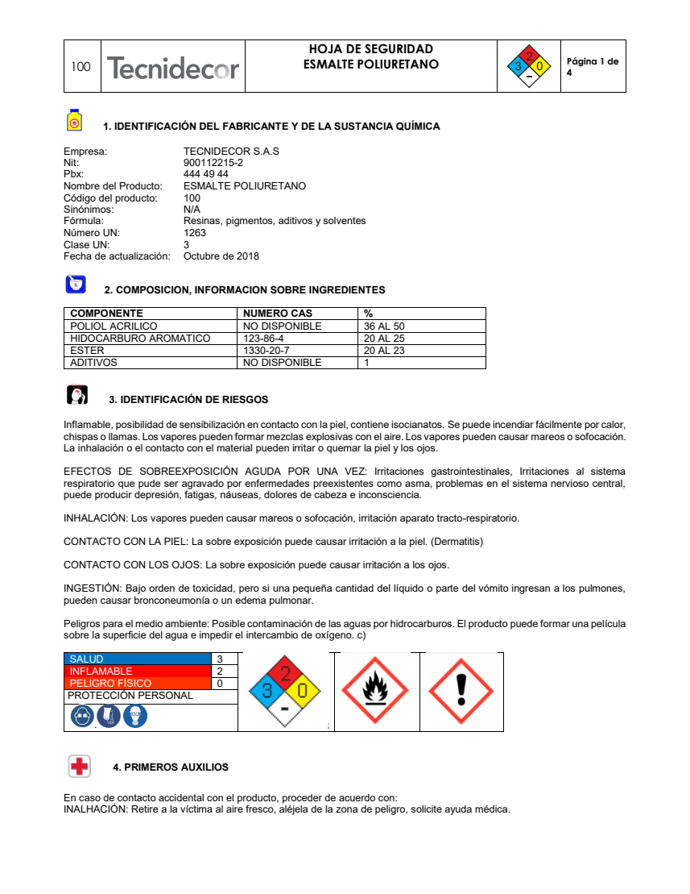
| COMPONENTE | NUMERO CAS | % |
|---|---|---|
| POLIOL ACRILICO | NO DISPONIBLE | 36 AL 50 |
| HIDOCARBURO AROMATICO | 123-86-4 | 20 AL 25 |
| ESTER | 1330-20-7 | 20 AL 23 |
| ADITIVOS | NO DISPONIBLE | 1 |
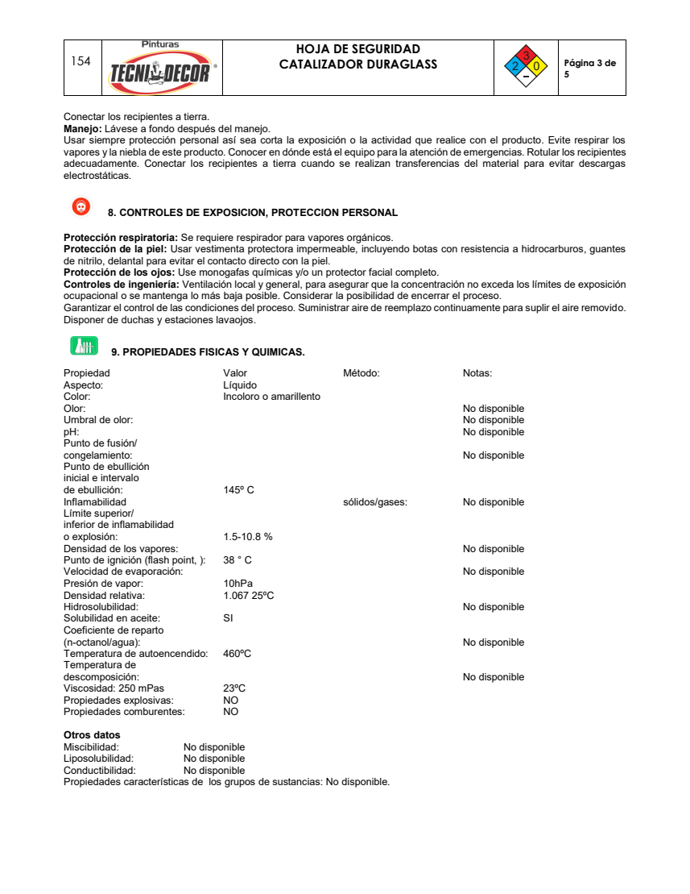
| Propiedad | Valor | Método: | Notas: |
|---|---|---|---|
| Aspecto: | Líquido | ||
| Color: | Incoloro o amarillento | ||
| Olor: | No disponible | ||
| Umbral de olor: | No disponible | ||
| pH: | No disponible | ||
| Punto de fusión/ congelamiento: | No disponible | ||
| Punto de ebullición inicial e intervalo | |||
| de ebullición: | 145º C | ||
| Inflamabilidad | sólidos/gases: | No disponible | |
| Límite superior/ inferior de inflamabilidad | |||
| o explosión: | 1.5-10.8 % | ||
| Densidad de los vapores: | |||
| No disponible | |||
| Punto de ignición (flash point, ): | 38 ° C | ||
| Velocidad de evaporación: | No disponible | ||
| Presión de vapor: | 10hPa | ||
| Densidad relativa: | 1.067 25ºC | ||
| Hidrosolubilidad: | No disponible | ||
| Solubilidad en aceite: | SI | ||
| Coeficiente de reparto (n-octanol/agua): Temperatura de autoencendido: | 460ºC | No disponible | |
| Temperatura de | |||
| descomposición: | No disponible | ||
| Viscosidad: 250 mPas | 23ºC | ||
| Propiedades explosivas: | NO | ||
| Propiedades comburentes: | NO |
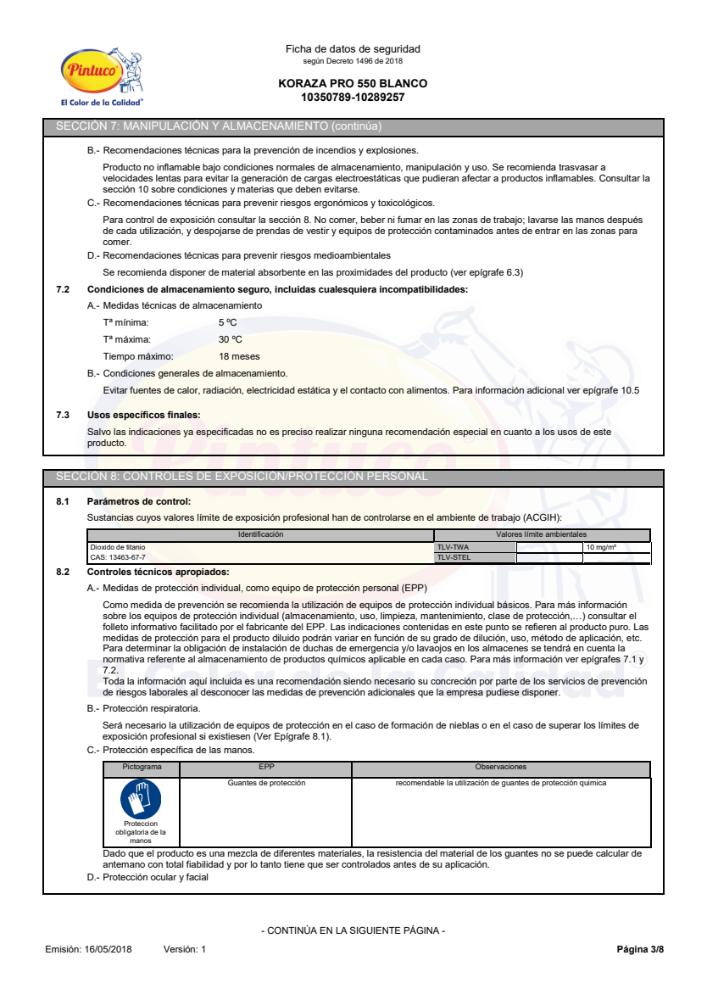
| Identificación | Valores límite ambientales | Valores límite ambientales |
|---|---|---|
| Dioxido de titanio | TLV-TWA | 10 mg/m³ |
| CAS: 13463-67-7 | TLV-STEL |
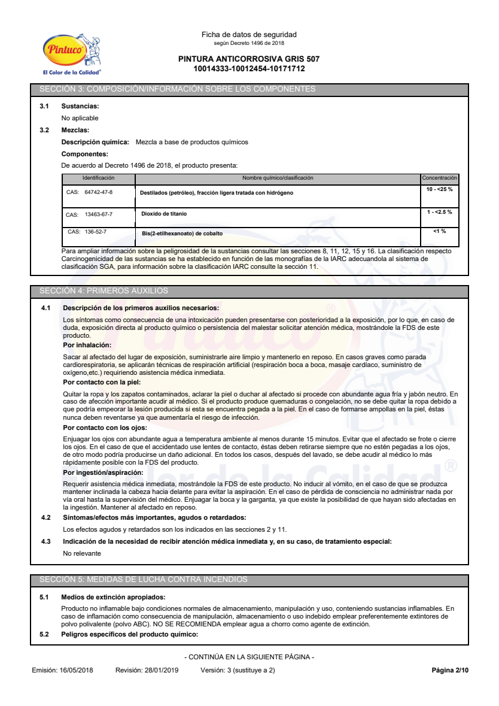
| Identificación | Nombre químico/clasificación | Concentración |
|---|---|---|
| CAS: 64742-47-8 | Destilados (petróleo), fracción ligera tratada con hidrógeno | 10 - <25 % |
| CAS: 13463-67-7 | Dioxido de titanio | 1 - <2.5 % |
| CAS: 136-52-7 | Bis(2-etilhexanoato) de cobalto | <1 % |
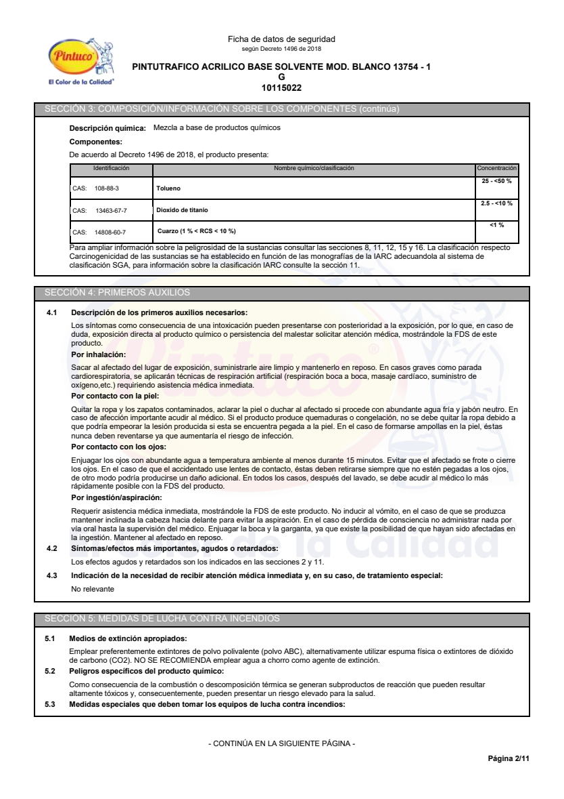
| Identificación | Identificación | Nombre químico/clasificación | Concentración |
|---|---|---|---|
| CAS: | 108-88-3 | Tolueno | 25 - <50 % |
| CAS: | 13463-67-7 | Dioxido de titanio | 2.5 - <10 % |
| CAS: | 14808-60-7 | Cuarzo (1 % < RCS < 10 %) | <1 % |
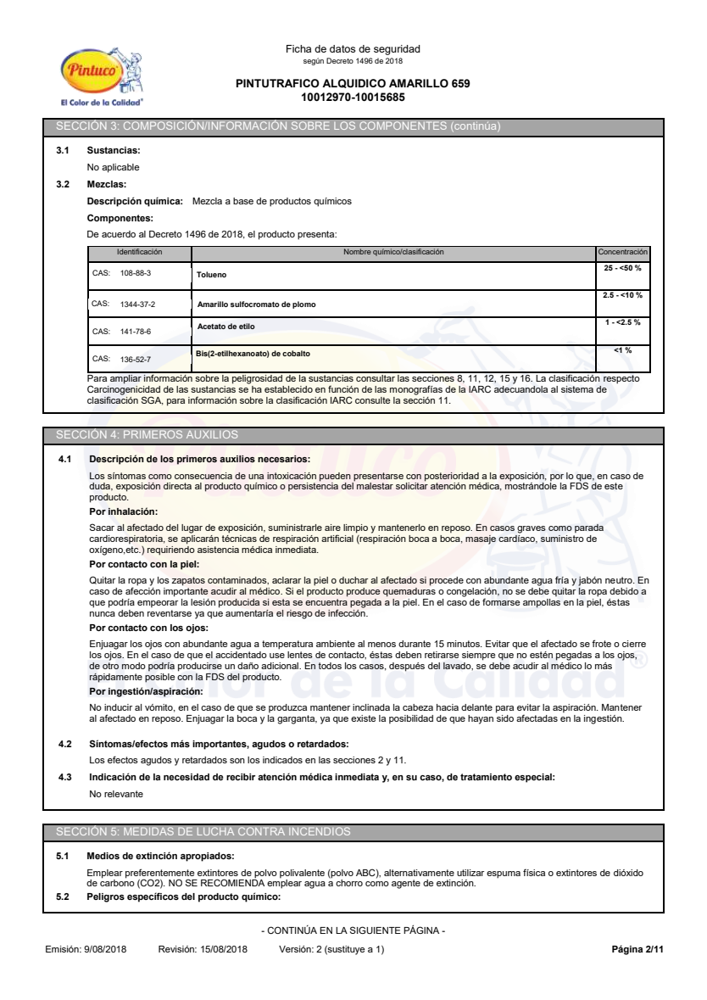
| Identificación | Identificación | Nombre químico/clasificación | Concentración |
|---|---|---|---|
| CAS: | 108-88-3 | Tolueno | 25 - <50 % |
| CAS: | 1344-37-2 | Amarillo sulfocromato de plomo | 2.5 - <10 % |
| CAS: | 141-78-6 | Acetato de etilo | 1 - <2.5 % |
| CAS: | 136-52-7 | Bis(2-etilhexanoato) de cobalto | <1 % |
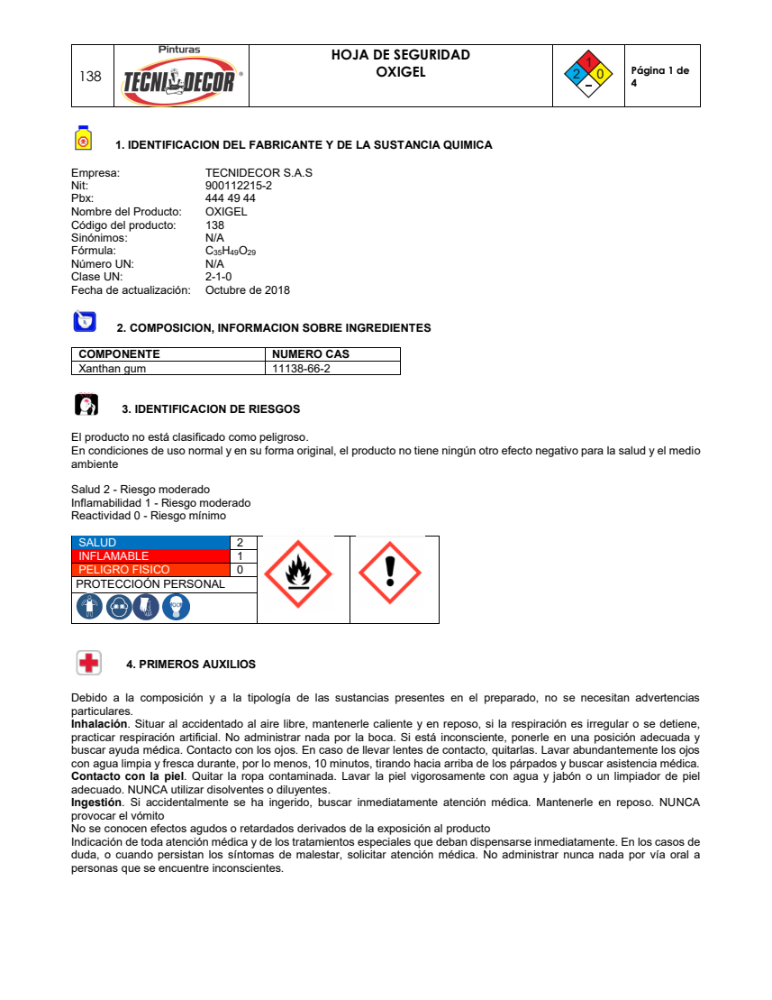
| COMPONENTE | NUMERO CAS |
|---|---|
| Xanthan gum | 11138-66-2 |
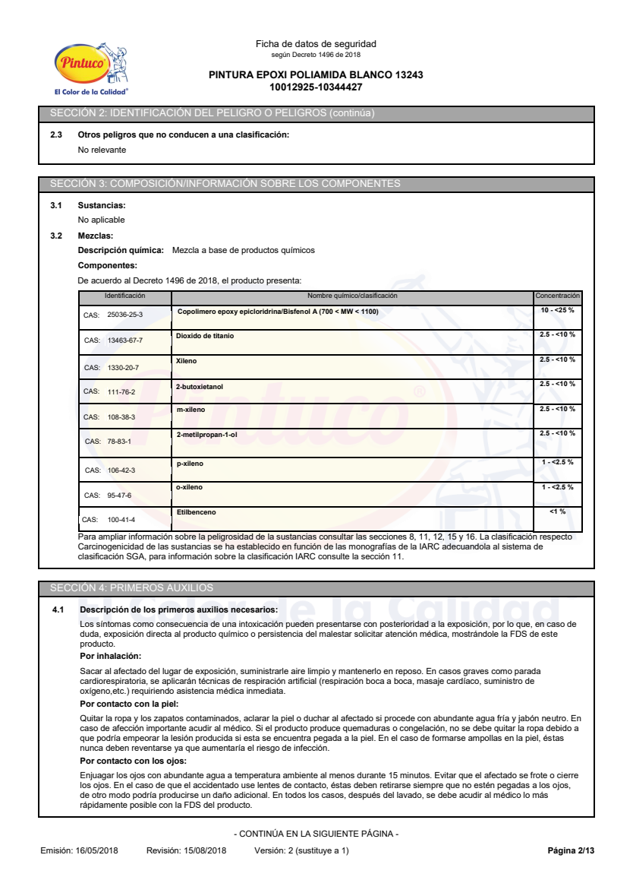
| Identificación | Identificación | Nombre químico/clasificación | Concentración |
|---|---|---|---|
| CAS: | 25036-25-3 | Copolimero epoxy epicloridrina/Bisfenol A (700 < MW < 1100) | 10 - <25 % |
| CAS: | 13463-67-7 | Dioxido de titanio | 2.5 - <10 % |
| CAS: | 1330-20-7 | Xileno | 2.5 - <10 % |
| CAS: | 111-76-2 | 2-butoxietanol | 2.5 - <10 % |
| CAS: | 108-38-3 | m-xileno | 2.5 - <10 % |
| CAS: | 78-83-1 | 2-metilpropan-1-ol | 2.5 - <10 % |
| CAS: | 106-42-3 | p-xileno | 1 - <2.5 % |
| CAS: | 95-47-6 | o-xileno | 1 - <2.5 % |
| CAS: | 100-41-4 | Etilbenceno | <1 % |
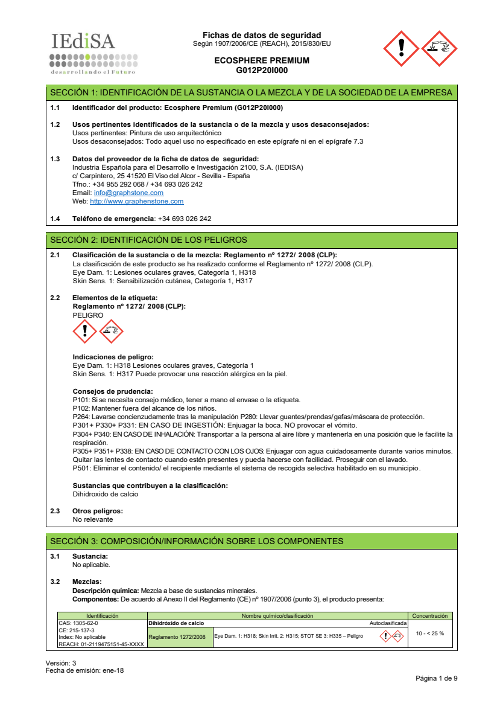
| Identificación | Nombre químico/clasificación | Nombre químico/clasificación | Nombre químico/clasificación | Concentración |
|---|---|---|---|---|
| CAS: 1305-62-0 | Dihidróxido de calcio | Dihidróxido de calcio | Autoclasificada | |
| CE: 215-137-3 Index: No aplicable REACH: 01-2119475151-45-XXXX | Reglamento 1272/2008 | Eye Dam. 1: H318; Skin Irrit. 2: H315; STOT SE 3: H335 - Peligro | 10 - < 25 % |
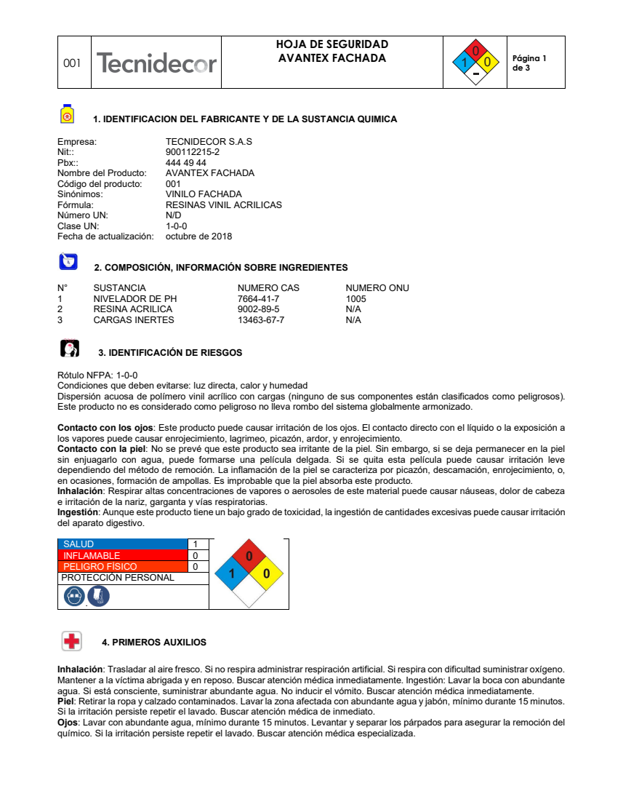
| N° | SUSTANCIA | NUMERO CAS | NUMERO ONU |
|---|---|---|---|
| 1 | NIVELADOR DE PH | 7664-41-7 | 1005 |
| 2 | RESINA ACRILICA | 9002-89-5 | N/A |
| 3 | CARGAS INERTES | 13463-67-7 | N/A |
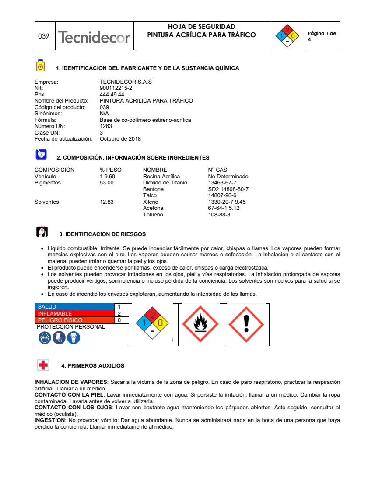
| COMPOSICIÓN | % PESO | NOMBRE | N° CAS |
|---|---|---|---|
| Vehículo | 1 9.60 | Resina Acrílica | No Determinado |
| Pigmentos | 53.00 | Dióxido de Titanio | 13463-67-7 |
| Bentone | SD2 14808-60-7 | ||
| Talco | 14807-96-6 | ||
| Solventes | 12.83 | Xileno | 1330-20-7 9.45 |
| Acetona | 67-64-1 5.12 | ||
| Tolueno | 108-88-3 |
Esta ficha no tiene tablas en el Markdown. Revisa manualmente un bloque con datos (p. ej. sección 3 o 9).
Esta ficha no tiene tablas en el Markdown. Revisa manualmente un bloque con datos (p. ej. sección 3 o 9).
Esta ficha no tiene tablas en el Markdown. Revisa manualmente un bloque con datos (p. ej. sección 3 o 9).
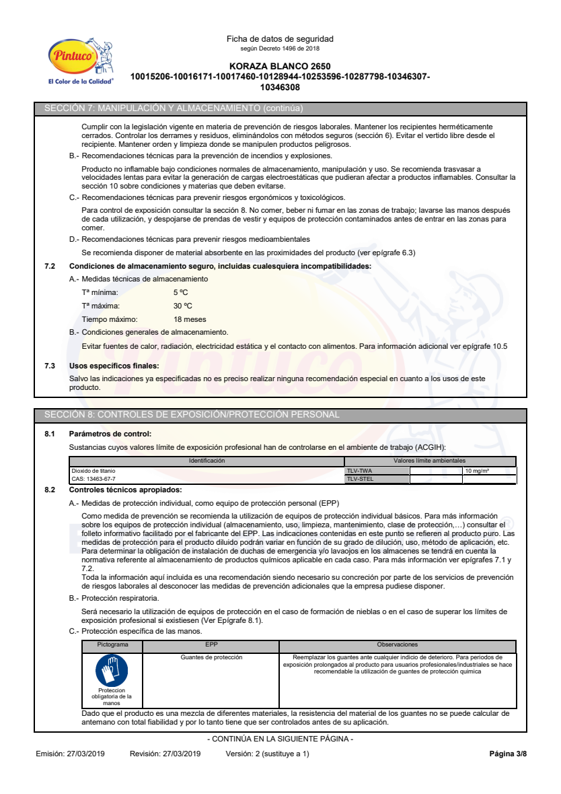
| Identificación | Valores límite ambientales | Valores límite ambientales |
|---|---|---|
| Dioxido de titanio | TLV-TWA | 10 mg/m³ |
| CAS: 13463-67-7 | TLV-STEL |
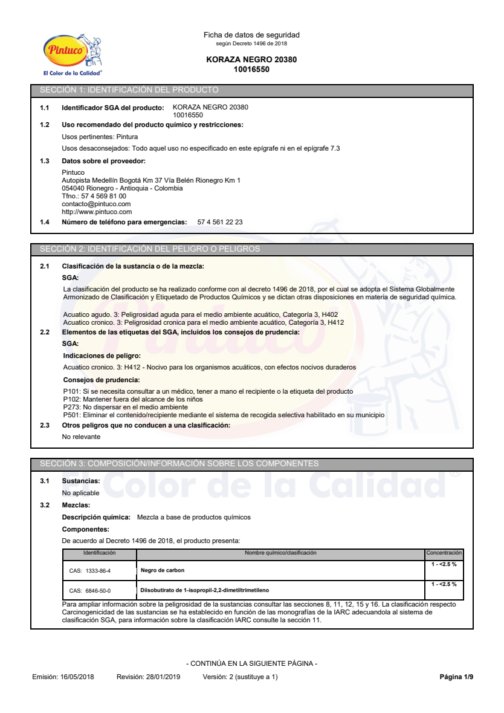
| Identificación | Nombre químico/clasificación | Concentración |
|---|---|---|
| CAS: 1333-86-4 | Negro de carbon | 1 - <2.5 % |
| CAS: 6846-50-0 | Diisobutirato de 1-isopropil-2,2-dimetiltrimetileno | 1 - <2.5 % |
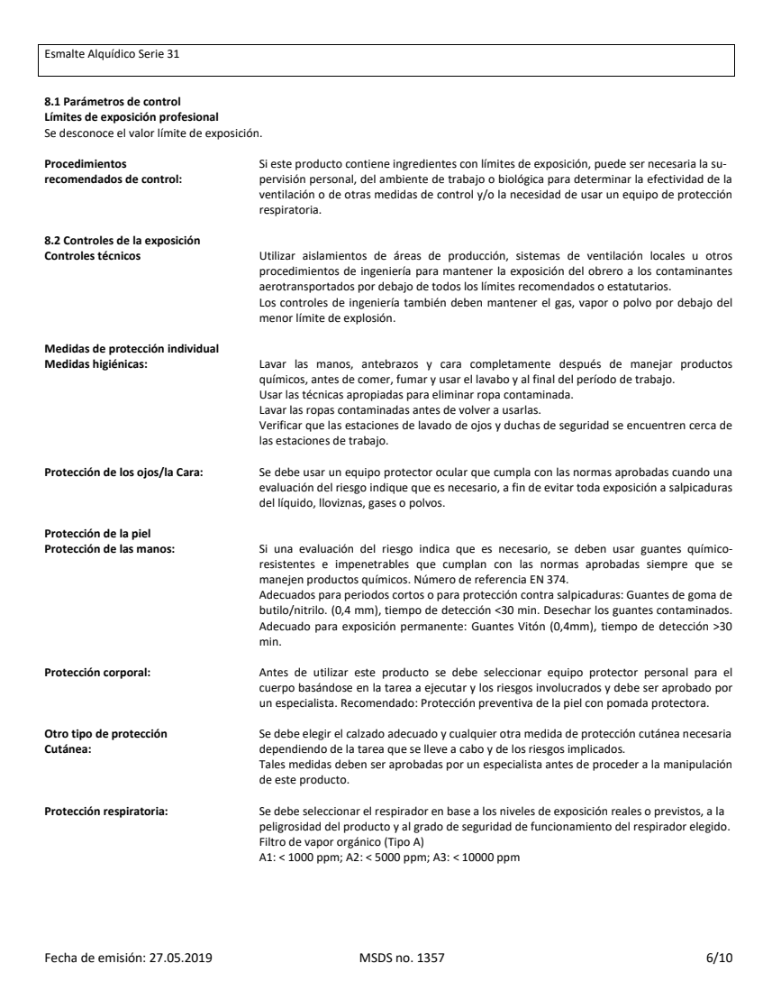
| Procedimientos recomendados de control: | Si este producto contiene ingredientes con límites de exposición, puede ser necesaria la su- pervisión personal, del ambiente de trabajo o biológica para determinar la efectividad de la ventilación o de otras medidas de control y/o la necesidad de usar un equipo de protección respiratoria. |
|---|---|
| 8.2 Controles de la exposición | |
| Controles técnicos | Utilizar aislamientos de áreas de producción, sistemas de ventilación locales u otros procedimientos de ingeniería para mantener la exposición del obrero a los contaminantes aerotransportados por debajo de todos los límites recomendados o estatutarios. Los controles de ingeniería también deben mantener el gas, vapor o polvo por debajo del menor límite de explosión. |
| Medidas de protección individual | |
| Medidas higiénicas: | Lavar las manos, antebrazos y cara completamente después de manejar productos químicos, antes de comer, fumar y usar el lavabo y al final del período de trabajo. Usar las técnicas apropiadas para eliminar ropa contaminada. Lavar las ropas contaminadas antes de volver a usarlas. Verificar que las estaciones de lavado de ojos y duchas de seguridad se encuentren cerca de las estaciones de trabajo. |
| Protección de los ojos/la Cara: | Se debe usar un equipo protector ocular que cumpla con las normas aprobadas cuando una evaluación del riesgo indique que es necesario, a fin de evitar toda exposición a salpicaduras del líquido, lloviznas, gases o polvos. |
| Protección de la piel | |
| Protección de las manos: | Si una evaluación del riesgo indica que es necesario, se deben usar guantes químico- resistentes e impenetrables que cumplan con las normas aprobadas siempre que se manejen productos químicos. Número de referencia EN 374. Adecuados para periodos cortos o para protección contra salpicaduras: Guantes de goma de butilo/nitrilo. (0,4 mm), tiempo de detección <30 min. Desechar los guantes contaminados. Adecuado para exposición permanente: Guantes Vitón (0,4mm), tiempo de detección >30 min. |
| Protección corporal: | Antes de utilizar este producto se debe seleccionar equipo protector personal para el cuerpo basándose en la tarea a ejecutar y los riesgos involucrados y debe ser aprobado por un especialista. Recomendado: Protección preventiva de la piel con pomada protectora. |
| Otro tipo de protección Cutánea: | Se debe elegir el calzado adecuado y cualquier otra medida de protección cutánea necesaria dependiendo de la tarea que se lleve a cabo y de los riesgos implicados. Tales medidas deben ser aprobadas por un especialista antes de proceder a la manipulación de este producto. |
| Protección respiratoria: | Se debe seleccionar el respirador en base a los niveles de exposición reales o previstos, a la peligrosidad del producto y al grado de seguridad de funcionamiento del respirador elegido. Filtro de vapor orgánico (Tipo A) A1: < 1000 ppm; A2: < 5000 ppm; A3: < 10000 ppm |
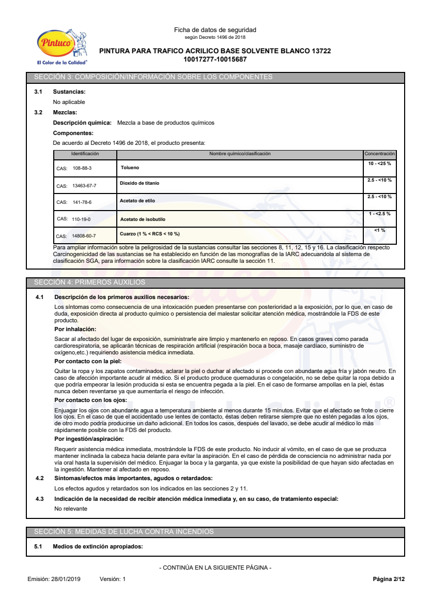
| Identificación | Identificación | Nombre químico/clasificación | Concentración |
|---|---|---|---|
| CAS: | 108-88-3 | Tolueno | 10 - <25 % |
| CAS: | 13463-67-7 | Dioxido de titanio | 2.5 - <10 % |
| CAS: | 141-78-6 | Acetato de etilo | 2.5 - <10 % |
| CAS: | 110-19-0 | Acetato de isobutilo | 1 - <2.5 % |
| CAS: | 14808-60-7 | Cuarzo (1 % < RCS < 10 %) | <1 % |